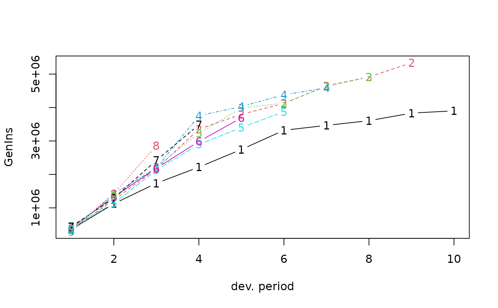
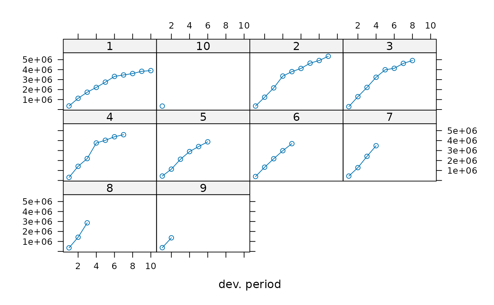

Generic functions for triangles
Triangles.RdFunctions to ease the work with triangle shaped matrix data. A 'triangle' is a matrix with some generic functions.
triangle creates a triangle from the given set of vectors of
observed data.
as.triangle attempts to turn its argument into a triangle.
Triangles are usually stored in a “long” format in data bases. The
function can transform a data.frame into a triangle shape.
as.data.frame turns a triangle into a data frame.
Usage
triangle(..., bycol=FALSE, origin="origin", dev="dev", value="value")
# S3 method for class 'matrix'
as.triangle(Triangle, origin="origin", dev="dev", value="value", ...)
# S3 method for class 'data.frame'
as.triangle(Triangle, origin="origin", dev="dev", value="value", ...)
# S3 method for class 'triangle'
as.data.frame(x, row.names=NULL, optional, lob=NULL, na.rm=FALSE, ...)
as.triangle(Triangle, origin="origin", dev="dev", value="value", ...)
# S3 method for class 'triangle'
plot(x, type = "b", xlab = "dev. period", ylab = NULL, lattice=FALSE, ...)Arguments
- Triangle
a triangle
- bycol
logical. If
FALSE(the default) the triangle is filled by rows, otherwise the triangle is filled by columns.- origin
name of the origin period, default is
"origin".- dev
name of the development period, default is
"dev".- value
name of the value, default is
"value".- row.names
default is set to
NULLand will merge origin and dev. period to create row names.- lob
default is
NULL. The idea is to uselob(line of business) as an additional column to label a triangle in a long format, see the examples for more details.- optional
not used
- na.rm
logical. Remove missing values?
- x
a matrix of class 'triangle'
- xlab
a label for the x axis, defaults to 'dev. period'
- ylab
a label for the y axis, defaults to NULL
- lattice
logical. If
FALSEthe functionmatplotis used to plot the developments of the triangle in one graph, otherwise thexyplotfunction of the lattice package is used, to plot developments of each origin period in a different panel.- type
type, see
plot.default- ...
vectors of data in
triangle, see details; arguments to be passed to other methods everywhere else.
Details
Function triangle builds a triangle matrix from the vectors of
known data provided in .... Normally, each of these
vectors should be one shorter than the preceeding one. The length of
the first vector dictates the number of development periods or origin
periods (respectively when bycol is FALSE or
TRUE). As a special case, the function will build an \(n
\times n\) triangle from a single vector of \(n(n + 1)/2\) data
points.
The names of the arguments in ... for function
triangle (when there are more than one) are retained for
row/column names. Similarly, the names of the elements of the
first argument are used as column/row names.
Warning
Please note that for the function as.triangle the origin and
dev. period columns have to be of type numeric or a character which can be
converted into numeric.
Also note that when converting from a data.frame to a matrix with
as.triangle, multiple records with the same origin and
dev will be aggregated.
Examples
GenIns
#> dev
#> origin 1 2 3 4 5 6 7 8 9
#> 1 357848 1124788 1735330 2218270 2745596 3319994 3466336 3606286 3833515
#> 2 352118 1236139 2170033 3353322 3799067 4120063 4647867 4914039 5339085
#> 3 290507 1292306 2218525 3235179 3985995 4132918 4628910 4909315 NA
#> 4 310608 1418858 2195047 3757447 4029929 4381982 4588268 NA NA
#> 5 443160 1136350 2128333 2897821 3402672 3873311 NA NA NA
#> 6 396132 1333217 2180715 2985752 3691712 NA NA NA NA
#> 7 440832 1288463 2419861 3483130 NA NA NA NA NA
#> 8 359480 1421128 2864498 NA NA NA NA NA NA
#> 9 376686 1363294 NA NA NA NA NA NA NA
#> 10 344014 NA NA NA NA NA NA NA NA
#> dev
#> origin 10
#> 1 3901463
#> 2 NA
#> 3 NA
#> 4 NA
#> 5 NA
#> 6 NA
#> 7 NA
#> 8 NA
#> 9 NA
#> 10 NA
plot(GenIns)

plot(GenIns, lattice=TRUE)

## Convert long format into triangle
## Triangles are usually stored as 'long' tables in data bases
head(GenInsLong)
#> accyear devyear incurred claims
#> 1 1 1 357848
#> 2 2 1 352118
#> 3 3 1 290507
#> 4 4 1 310608
#> 5 5 1 443160
#> 6 6 1 396132
as.triangle(GenInsLong, origin="accyear", dev="devyear", "incurred claims")
#> devyear
#> accyear 1 2 3 4 5 6 7 8 9
#> 1 357848 1124788 1735330 2218270 2745596 3319994 3466336 3606286 3833515
#> 2 352118 1236139 2170033 3353322 3799067 4120063 4647867 4914039 5339085
#> 3 290507 1292306 2218525 3235179 3985995 4132918 4628910 4909315 NA
#> 4 310608 1418858 2195047 3757447 4029929 4381982 4588268 NA NA
#> 5 443160 1136350 2128333 2897821 3402672 3873311 NA NA NA
#> 6 396132 1333217 2180715 2985752 3691712 NA NA NA NA
#> 7 440832 1288463 2419861 3483130 NA NA NA NA NA
#> 8 359480 1421128 2864498 NA NA NA NA NA NA
#> 9 376686 1363294 NA NA NA NA NA NA NA
#> 10 344014 NA NA NA NA NA NA NA NA
#> devyear
#> accyear 10
#> 1 3901463
#> 2 NA
#> 3 NA
#> 4 NA
#> 5 NA
#> 6 NA
#> 7 NA
#> 8 NA
#> 9 NA
#> 10 NA
X <- as.data.frame(RAA)
head(X)
#> origin dev value
#> 1981-1 1981 1 5012
#> 1982-1 1982 1 106
#> 1983-1 1983 1 3410
#> 1984-1 1984 1 5655
#> 1985-1 1985 1 1092
#> 1986-1 1986 1 1513
Y <- as.data.frame(RAA, lob="General Liability")
head(Y)
#> origin dev value lob
#> 1981-1 1981 1 5012 General Liability
#> 1982-1 1982 1 106 General Liability
#> 1983-1 1983 1 3410 General Liability
#> 1984-1 1984 1 5655 General Liability
#> 1985-1 1985 1 1092 General Liability
#> 1986-1 1986 1 1513 General Liability
## Basic creation of a triangle from loss development data
triangle(c(100, 150, 175, 180, 200),
c(110, 168, 192, 205),
c(115, 169, 202),
c(125, 185),
150)
#> dev
#> origin 1 2 3 4 5
#> 1 100 150 175 180 200
#> 2 110 168 192 205 NA
#> 3 115 169 202 NA NA
#> 4 125 185 NA NA NA
#> 5 150 NA NA NA NA
## Same, with named origin periods
triangle("2012" = c(100, 150, 175, 180, 200),
"2013" = c(110, 168, 192, 205),
"2014" = c(115, 169, 202),
"2015" = c(125, 185),
"2016" = 150)
#> dev
#> origin 1 2 3 4 5
#> 2012 100 150 175 180 200
#> 2013 110 168 192 205 NA
#> 2014 115 169 202 NA NA
#> 2015 125 185 NA NA NA
#> 2016 150 NA NA NA NA
## Again, with also named development periods
triangle("2012" = c("12 months" = 100,
"24 months" = 150,
"36 months" = 175,
"48 months" = 180,
"60 months" = 200),
"2013" = c(110, 168, 192, 205),
"2014" = c(115, 169, 202),
"2015" = c(125, 185),
"2016" = 150)
#> dev
#> origin 12 months 24 months 36 months 48 months 60 months
#> 2012 100 150 175 180 200
#> 2013 110 168 192 205 NA
#> 2014 115 169 202 NA NA
#> 2015 125 185 NA NA NA
#> 2016 150 NA NA NA NA
## Quick, simplified usage
triangle(c(100, 150, 175, 110, 168, 115))
#> dev
#> origin 1 2 3
#> 1 100 150 175
#> 2 110 168 NA
#> 3 115 NA NA